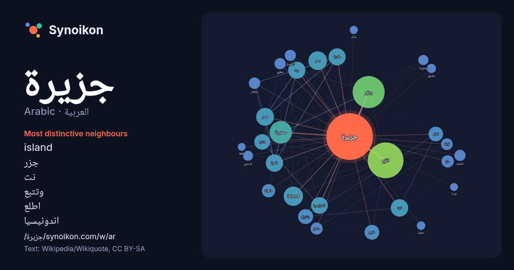

العربية · Arabic · word of the day list
جزيرة
“island” · The words found around it in 1816 instances from Arabic Wikipedia, Wikiquote.

Most distinctive neighbours
- island 71×
- جزر 62×
- نت 46×
- وتتبع 43×
- اطلع 41×
- اندونيسيا 38×
- ورد 35×
- تقع 34×
- ماهولة 29×
- مكتبة 28×
- قاهرة 25×
- مشعل 25×
- قبالة 23×
- بتاريخ 22×
- ارخبيل 22×
- مان 22×
- صغيرة 21×
- وجزيرة 19×
- خليج 19×
- صغري 19×
× = how many times more often than in general Arabic Wikipedia text.
Most frequent neighbours
- تقع 247
- جزر 198
- صغيرة 97
- island 72
- جنوب 71
- بحر 67
- اكبر 65
- مصر 61
- تابعة 60
- نت 59
- قاهرة 58
- ورد 57
- شمال 56
- مكتبة 56
- اندونيسيا 54
- احدي 52
- عربية 50
- موقع 47
- وتتبع 47
- غرب 45
In context
- جزيرة جاوه في إندونيسيا جزيرة قبرص جزيرة مالطة جزيرة جربة جزر الكناري جزيرة كريت جزيرة البحرين جزيرة أرواد جزيرة مايناو جزيرة فورد جزيرة مدغشقر جزيرة Wikipedia snippets · جزيرة
- قناة الجزيرة هي قناة تلفزيونية إخبارية حكومية، تابعة لشبكة الجزيرة الإعلامية، تأسست في 1 نوفمبر 1996، ويقع مقرها في العاصمة القطرية الدوحة. في البداية Wikipedia snippets · قناة الجزيرة
- جزيرة كيلابا قد يقصد بها: جزيرة كيلابا (الجزر الألف) جزيرة كيلابا (الجزر الألف الشمالية) جزيرة كيلابا (كليمنتان الجنوبية) هذه صفحة توضيح تحتوي قائمة صفحات Wikipedia snippets · جزيرة كيلابا
- الحجاز». وبذلك تُعدّ دولة البحرين من جزيرة العرب. لجزيرة العرب عدة أسماء منها جزيرة العرب، وأرض العرب والجزيرة العربية وقد ذُكرتا في السنة النبوية وأقوال Wikipedia snippets · شبه الجزيرة العربية
- بعنوان جزيرة شاتر. إذا وصلت لهذه الصفحة عبر وصلة داخليّة، فضلا غيّر تلك الوصلة لتقود مباشرة إلى المقالة المعنيّة. جزيرة شاتر قد يقصد بها: جزيرة شاتر (رواية): Wikipedia snippets · جزيرة شاتر (توضيح)
- وبلجيكا وهولندا. تتكون المملكة المتحدة من جزيرة بريطانيا العظمى التي تضم ويلز وإسكتلندا وإنجلترا والشطر الشمالي من جزيرة أيرلندا والعديد من الجزر الصغيرة. تعد Wikipedia snippets · المملكة المتحدة
- جزيرة نيغهورن (الألمانية: Nigehörn) هي جزيرة اصطناعية غير مأهولة في بحر الشمال تنتمي إلى مدينة هامبورغ الألمانية. قائمة جزر ألمانيا ألمانيا في كومنز مواد Wikipedia snippets · جزيرة نيغهورن
- جزيرة مان هي جزيرة تتمتع بالحكم الذاتي تابعة لملحقات التاج البريطاني في البحر الأيرلندي بين بريطانيا العظمى وأيرلندا. وهي معترف بها كواحدة من دول السلتيك Wikipedia snippets · جزيرة مان
More Arabic words
- أغنية
- إله
- تاريخ
- جبل
- جرس
- جسر
- حديقة
- حصان
- حقيقة
- حياة
- خبز
- خريطة
- خريف
- ذهب
- زمن
- ساعة
- شاي
- شتاء
- صحة
- صحراء
- صمت
- صيف
- طبيعة
- طريق
- طعام
- ظل
- عائلة
- عاصفة
- عسل
- علم
- عمل
- غابة
- فن
- قطار
- قطة
- قلب
- قوة
- كلب
- لغة
- ماء
- مال
- مدينة
- مرآة
- مطر
- ملح
- مناخ
- موت
- نجم
- والدة
Precomputed on 2026-10-09 with default settings (±5 words, medium corpus). The interactive map can refresh it with live data.